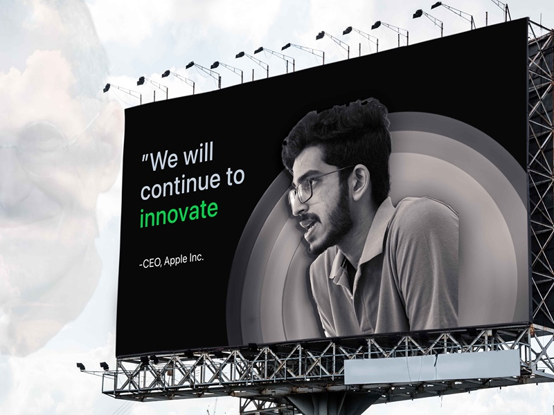
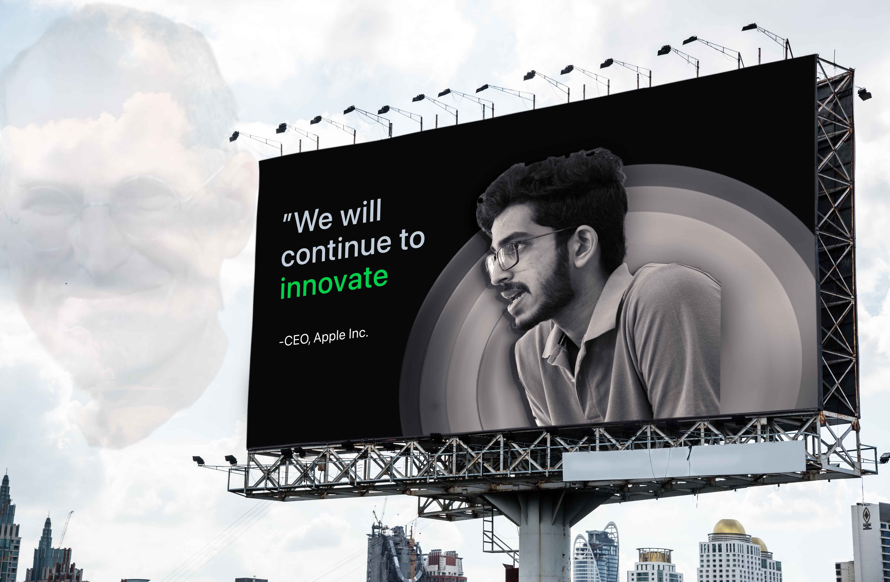

800 x 600 px Image:
Link to 800x600 px image: Google Drive
Full sized image (416KB) with no size restrictions:
APPLE CEO, A VISIONARY LEADER INSPIRED BY STEVE JOBS
The concept of this image is to show myself on a billboard as the CEO of Apple, and deeply
inspired by Steve Jobs.
BREAKDOWN
- The image is mainly made up of a mockup file, with the layers of Steve Jobs and the Billboard.
- The Billboard of Mockup files include several layers- myself, spin blur layers, shadows, color profile, etc.